3つの基本方針
北九州市生物多様性戦略が掲げる、ネイチャーポジティブ実現への柱

1
生物多様性の保全・回復と持続可能な利用
北九州の豊かな自然環境を守り、失われた生態系を回復させるとともに、自然の恵みを将来にわたって持続的に活用する取り組みを推進します。
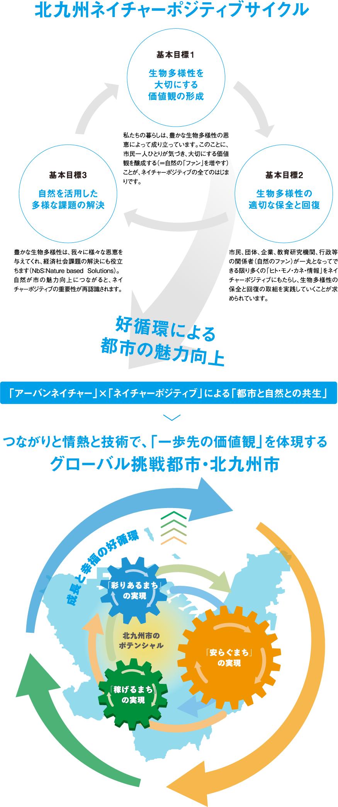
2
自然を活かした地域づくり
アーバンネイチャーの特性を活かし、自然と調和したまちづくり、観光・教育・健康の分野で自然の価値を地域の魅力に変えていきます。

3
企業のネイチャーポジティブ経営の推進
企業が自然資本を考慮した経営を実践し、事業活動を通じて生物多様性の保全に貢献する「ネイチャーポジティブ経営」を支援・推進します。
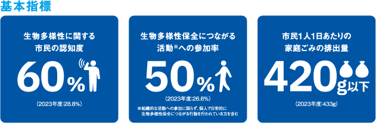
3つの基本施策
方針を実現するための具体的な施策の柱
施策 1
市民の理解醸成
生物多様性の大切さを市民一人ひとりが理解し、日常生活の中で行動できるよう、環境教育・普及啓発活動を推進。体験型プログラムやイベントを通じて、自然への関心を高めます。

施策 2
生物多様性の保全と回復
希少種の保護、外来種対策、里山の管理、干潟や藻場の再生など、科学的知見に基づいた保全・回復活動を展開。モニタリング体制の強化も進めます。

施策 3
課題解決と持続的な成長
生物多様性に関する地域課題をイノベーションで解決し、自然資本を活用した新たな産業・雇用を創出。環境と経済の好循環を目指します。
私たちにできること
日常の小さな行動が、大きな変化を生み出します
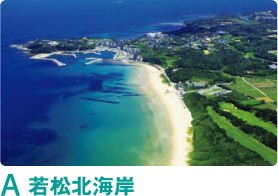
1
地元食材を選ぶ
北九州産の旬の食材を選ぶことで、地域の農林水産業と生態系を支えます。
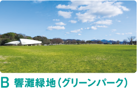
2
自然に触れる
身近な公園や山、海に出かけ、自然の豊かさを五感で感じましょう。
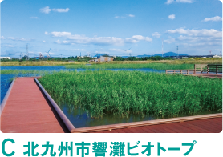
3
緑を育てる
庭やベランダで在来種の植物を育て、小さな生態系をつくりましょう。
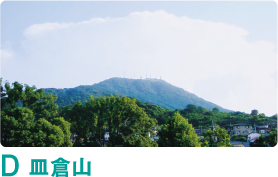
4
知る
生物多様性について学び、自分の暮らしとのつながりを理解しましょう。
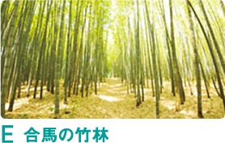
5
伝える
自然の素晴らしさや大切さを、家族・友人・地域の人に伝えましょう。
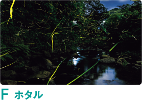
6
活動に参加する
清掃活動や自然観察会など、地域の環境保全活動に参加しましょう。
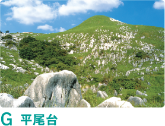
7
環境配慮商品を選ぶ
認証マーク付きの商品やエコ商品を積極的に選びましょう。
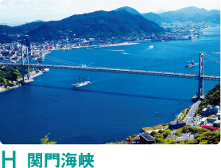
8
ごみを減らす
ごみの削減・分別・リサイクルで、自然環境への負荷を最小限に。
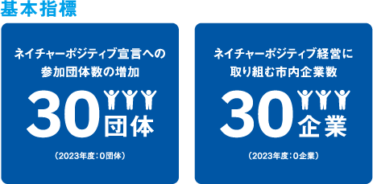
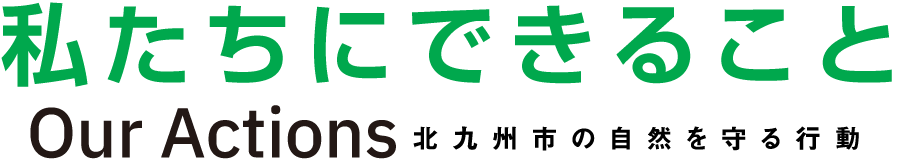
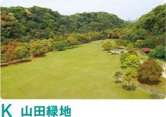